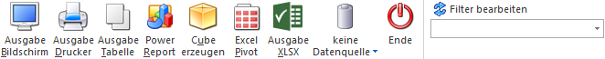

In der Lagerortauswertung, welche über den Menüpunkt…
1 WinLine FAKT
1 Auswertungen
1 Lagerorte
1 Lagerortauswertung
… aufgerufen wird, kann eine Bestandsliste der Lagerorte, eine Differenzliste (Lagerstand zur Summe der Bestände der Lagerorte) oder eine Stammdatenliste ausgegeben werden.

Das Fenster ist in die folgenden Register unterteilt, welche in den nachfolgenden Kapiteln detailliert beschrieben werden:
ü Register "Bestände"
In diesem
Register kann eine Liste der Bestände pro Lagerort ausgeben werden.
ü Register "Differenzen"
In diesem
Register kann eine Differenzliste (Lagerstand zur Summe der Bestände der
Lagerorte pro Artikel) ausgegeben werden.
ü Register "Stammdaten"
In diesem
Register kann eine Stammdatenliste über die Lagerorte ausgegeben werden.
Buttons

Ø Ausgabe Bildschirm
Mit Hilfe des Buttons "Ausgabe Bildschirm" oder der Taste F5 wird die Auswertung am Bildschirm ausgegeben.
Ø Ausgabe Drucker
Durch Anwahl des Buttons "Ausgabe Drucker" wird die Auswertung am Drucker ausgegeben.
Ø Ausgabe Tabelle
Bei der Anwahl des Buttons "Ausgabe Tabelle" wird die Auswertung in Form einer WinLine Tabelle dargestellt (nähere Informationen entnehmen Sie bitte dem Kapitel Lagerortauswertung Tabelle).
Ø Power Report
Durch Drücken des Buttons "Power Report" wird die Auswertung auf Basis einer Datenquelle grafisch dargestellt. Die Ausgabe ist individuell anpassbar und erfolgt in der Form von "Widgets", die unterschiedlichste Darstellungen ermöglichen.
Ø Cube erzeugen
Wenn die Ausgabe "Cube erzeugen" gewählt wird (nur möglich wenn auch die entsprechende Lizenz dafür vorhanden ist), dann wird die Auswertung im "Olap Viewer" angezeigt, wo es dann die Möglichkeit gibt, die Daten nach verschiedenen Gesichtspunkten auszuwerten.
Ø Excel Pivot
Durch Anwahl des Buttons "Excel Pivot" werden die Daten der Auswertungen in Form einer Pivot Ausgabe in Microsoft Excel (2007 oder höher) angezeigt.
Ø Ausgabe XLSX
Mit Hilfe des Buttons "Ausgabe XLSX" werden die ausgewerteten Zeilen an Microsoft Excel übergeben.
Ø Datenquelle
Mit Hilfe dieser Auswahl kann definiert werden, ob und wie eine Datenquelle (d.h. ein Snapshot oder eine MasterView) verwendet werden soll.
ü Keine Datenquelle
Bei Auswahl
von "keine Datenquelle" wird keine zuvor angelegte Datenquelle genutzt. D.h. die
Daten werden von der WinLine "live" ermittelt und in der gewünschten Form
ausgegeben.
Hinweis
Da die BI-Ausgabe (z.B. Cube oder Power Report) immer eine Datenquelle benötigt, wird im Hintergrund eine temporäre Datenquelle (Snapshot) gebildet.
ü Datenquelle
erstellen/aktualisieren
Die Daten werden zur Laufzeit ermittelt und an einen
zu definierenden Snapshot übergeben. Nach dem Füllen der Datenquelle wird die
gewünschte Ausgabevariante über die Datenquelle erzeugt. Dieser Vorgang kann mit
einer Zeitverzögerung verbunden sein, da die Daten zusätzlich gespeichert werden
müssen.
ü Datenquelle verwenden
Bei der
Verwendung eines Snapshots werden die Daten direkt aus der Datenquelle gelesen,
d.h. die für die Ausgabe benötigten Daten können ohne Verzögerung in der
gewünschten Variante ausgegeben werden.
Wird hingegen eine MasterView
gewählt, so werden die Daten für die Ausgabe "live" ermittelt, wobei diese so
aktuell sind wie die zugrunde liegenden Datenquellen.
Hinweis
Der Button "Datenquelle verwenden" wird nur angeboten, wenn für diesen Bereich (bezogen auf den aktuellen Benutzer / Mandanten) zumindest eine private oder öffentliche Datenquelle existiert. Des Weiteren stehen die Ausgabevarianten "Ausgabe Bildschirm", "Ausgabe Drucker" und "Ausgabe Tabelle" nicht zur Verfügung.
Hinweis
Weitere Informationen zum Thema "Datenquellen" entnehmen Sie bitte dem Kapitel "Die Datenquelle".
Ø Ende
Durch Drücken des Buttons "Ende" bzw. der Taste ESC wird das Fenster geschlossen.
Ø Filter bearbeiten
Durch Anklicken des Buttons "Filter bearbeiten" kann die Auswertung nach frei definierbaren Kriterien eingeschränkt werden.